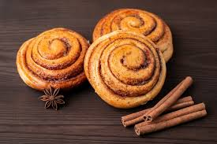

Ingredients
- 2 1/2 cups all-purpose flour
- 2 1/4 tsp active dry yeast
- 1/2 cup warm milk
- 1/4 cup granulated sugar
- 1/4 cup butter, melted
- 1/2 tsp salt
- 2 large eggs
- 1/2 cup brown sugar
- 2 tsp ground cinnamon
- 1/4 cup butter, softened
Instructions
- Dissolve yeast in warm milk. Add sugar and let it rest for 5 minutes.
- Mix flour, melted butter, salt, and eggs into the yeast mixture.
- Knead the dough until it's smooth and elastic.
- Roll the dough into a rectangle.
- Spread softened butter, brown sugar, and cinnamon on the dough.
- Roll up the dough and cut into buns.
- Place buns in a greased baking pan and let them rise.
- Bake at 350°F (175°C) for 25-30 minutes.
